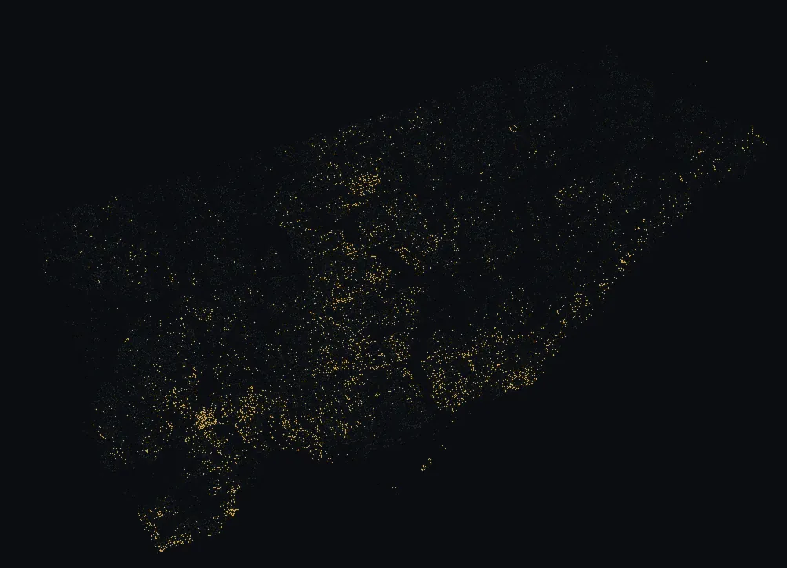
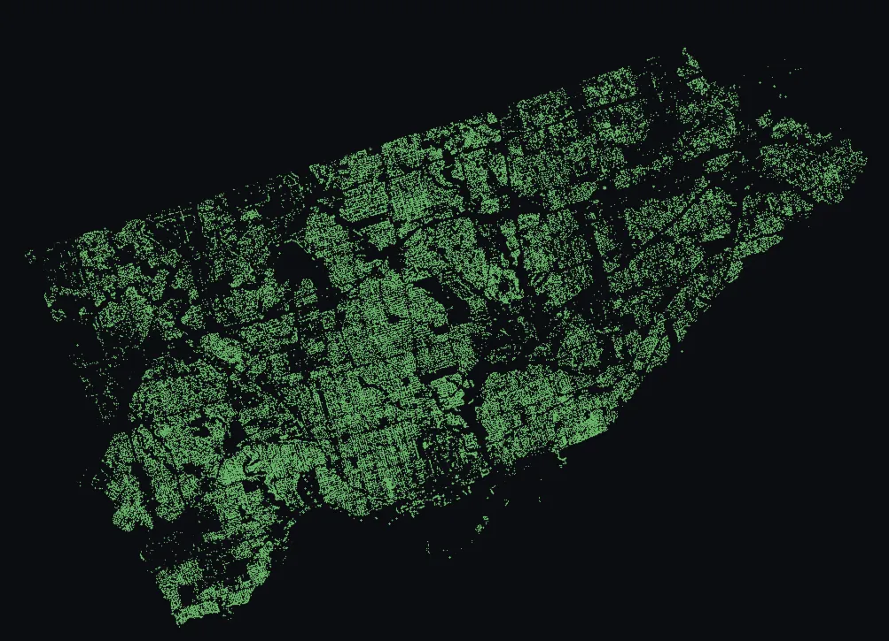
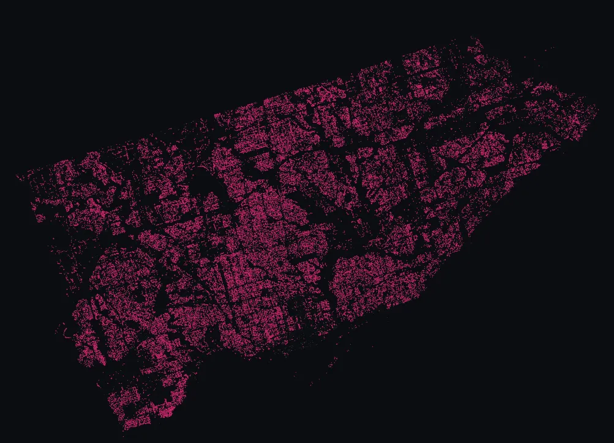

🔍 Lenses
Pre-curated views into the City of Toronto's 689,013 street-tree inventory. Each lens answers one question with one map: which trees are the elders, which feed the food web, which throw the spring shows, and which are rare enough to be worth a walk.

Veterans — Toronto's catalogued elders
Trees with trunk diameter ≥ 100 cm
6,424 trees · 0.9% of inventory

Pollinator hosts — the trees the food web actually depends on
Native Quercus, Prunus, Salix, Betula, Malus, and native Acer species
146,328 trees · 21.2% of inventory

Spring bloomers — the showy April-to-June canopy
Magnolia, cherry, plum, crabapple, redbud, serviceberry, horsechestnut, lilac, catalpa, tulip tree
93,743 trees · 13.6% of inventory

Rarities — species with fewer than 50 trees citywide
81 different species, 1,207 trees total
1,207 trees · 0.2% of inventory
Want something more specific? Search by address or species from the home page.